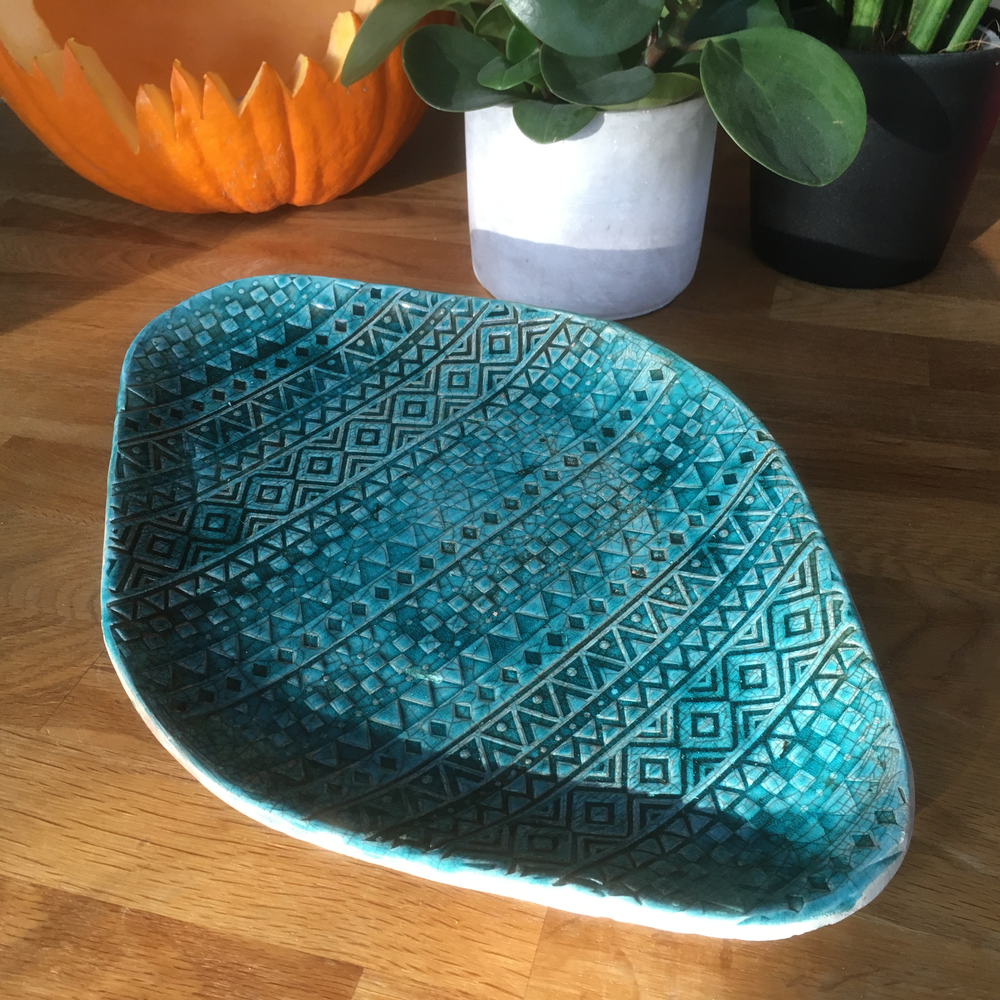
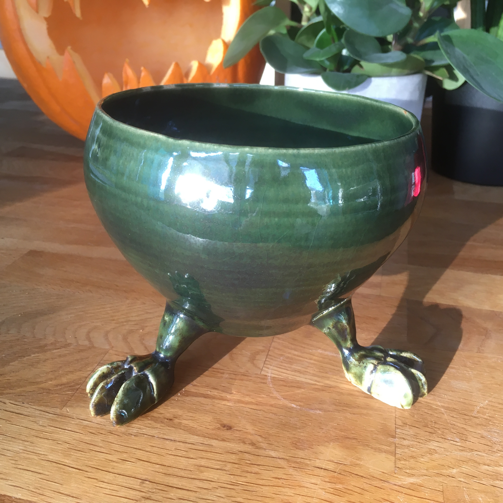
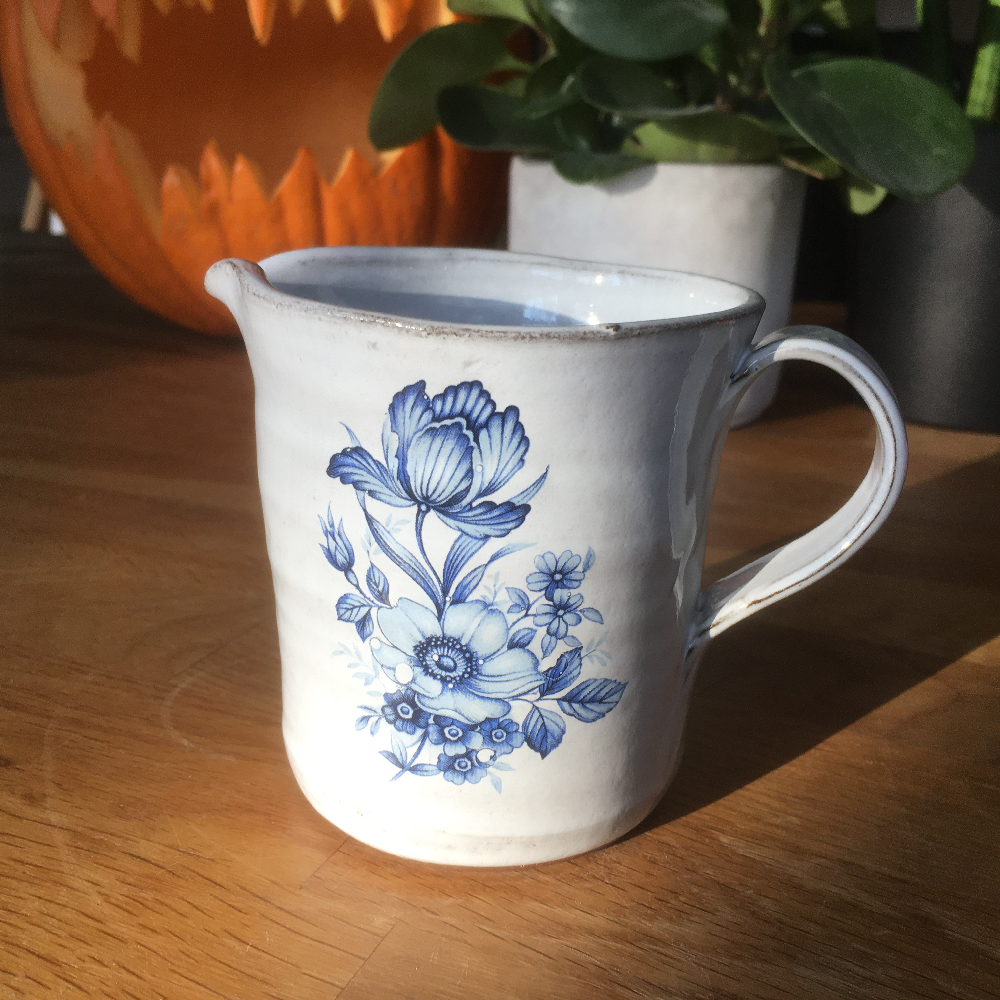
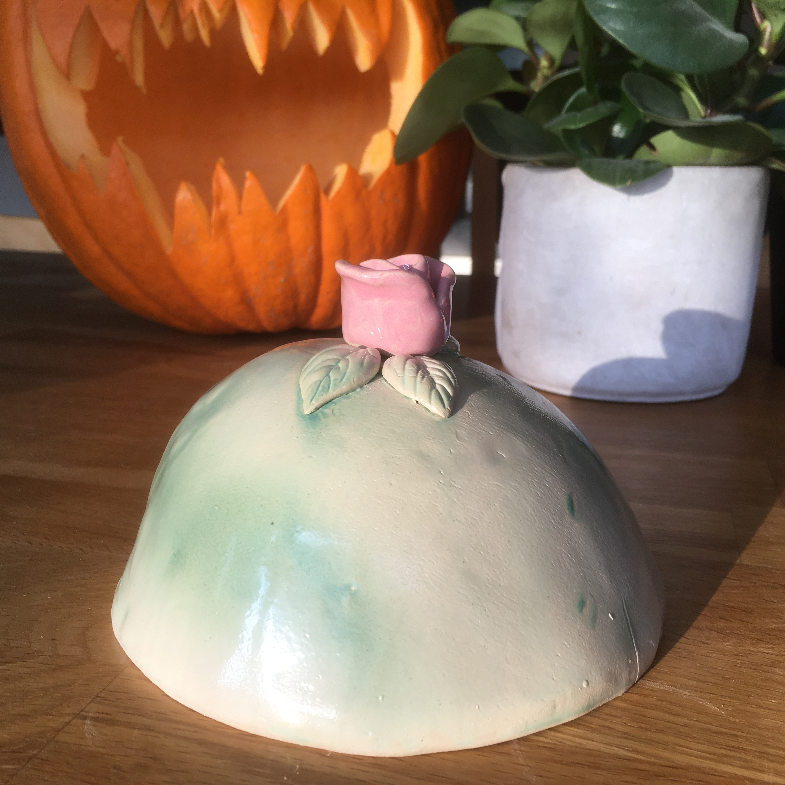
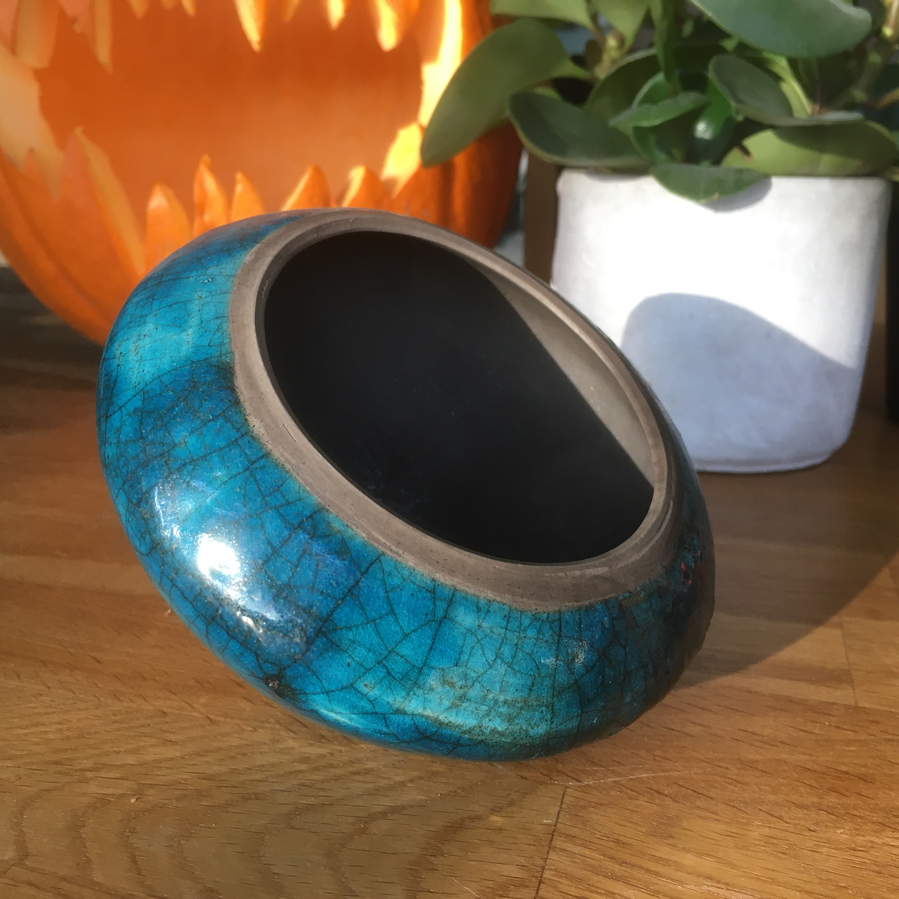
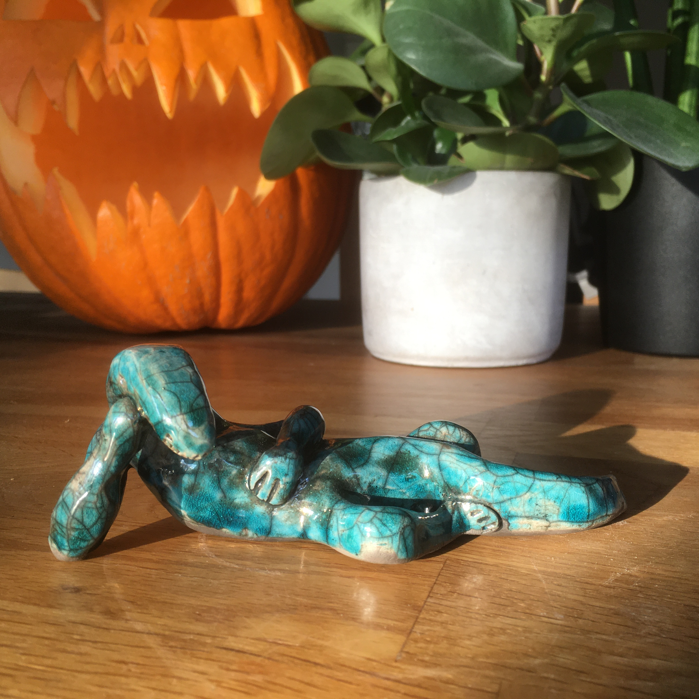
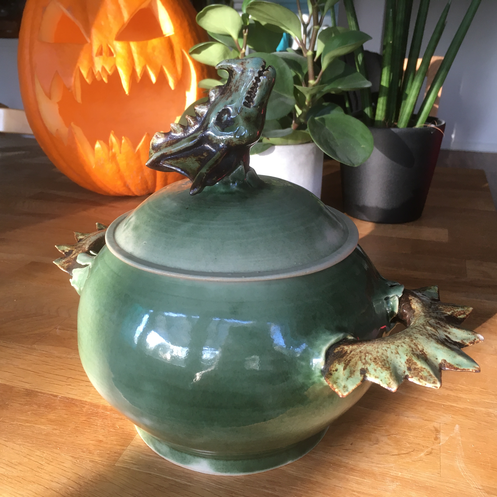
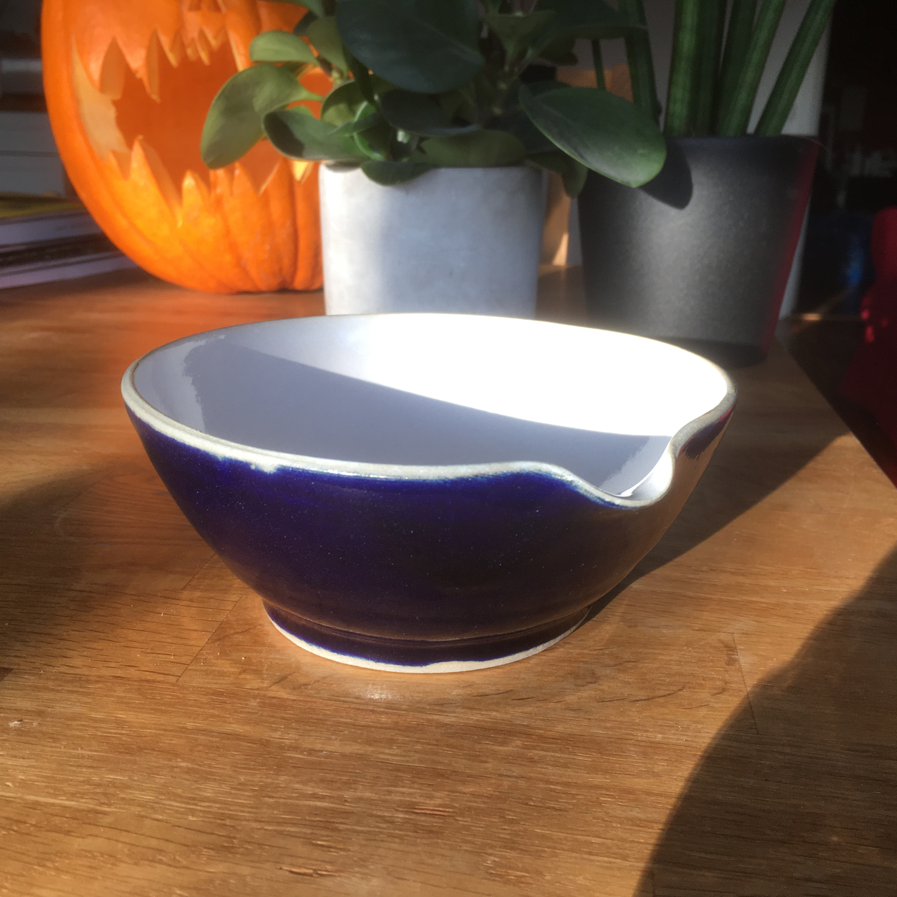

Rakubränt fat med inkamönster och grön-blå glasyr. Gjord av Linda.

Koppargrön skål med drakfötter. Gjord av Johan.

Liten vitglaserad mjölkkanna med blomstertryck. Gjord av Linda.

Grönglaserad prinsesstårta med rosa ros på toppen. Gjord av Linda.

"Bottenlös" blåglaserad rakubränd skål. Gjord av Johan.

Rakubränd "slappande" ödlefigur med turkosglasyr. Gjord av Johan.

"Drakgrytan" med koppargrön glasyr. Gjord av Johan.

Liten vispskål med vitglaserad insida och koboltblå glasyr på utsidan. Gjord av Johan.